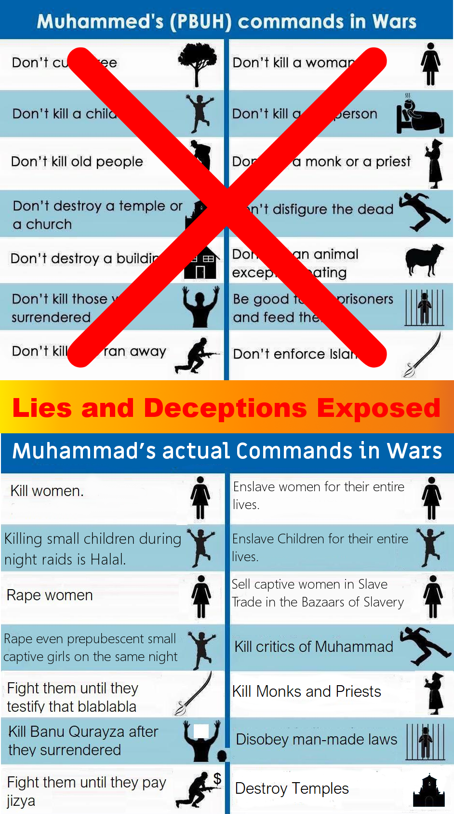
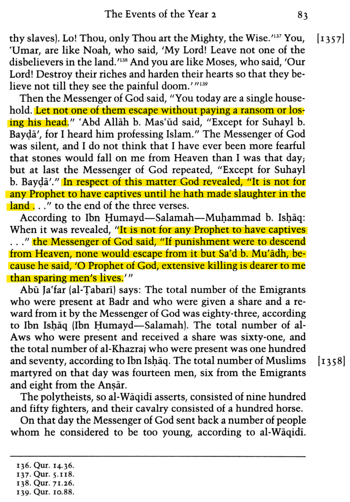

Islamic preachers claim the following about the war rulings in Islam:

Nevertheless, these are lies, and the reality of Islam is totally opposite to this.
Table of Contents:
- The killing of PRISONERS (those who surrendered)
- Muhammad also ordered the killing of old captives and young boys
- Yes, Muhammad ordered the looting of captive women, and to make them slaves and compel them to provide sex services for their entire lives
- Even Children were made SLAVES for the whole of their lives (including their coming Offspring i.e. the Evil of Slavery by Birth)
- Raping 9 years old (or even younger) pre-pubescent captive girls
- Killing Children during the raids
- All the non-Muslims could be attacked, while all the graze lands belong to Muhammad
- “Invitation to Islam” is not needed before attacking and killing the non-Muslims:
- Either accept Islam, or you will be beheaded
- Jizya was enforced only in order to humiliate Jews & Christians
- Destroying Temple, and killing the priests
- Mutilation of the Dead Bodies
- The killing of a Woman (Umm Qirfa)
- Cutting and burning of the Trees of opponents
- 109 Verses of the Quran to fight the non-believers, and 164 verses about Jihad
The killing of PRISONERS (those who surrendered)
The killing of prisoners is not only a “war crime” today, but even the Arabs of time of ignorance hated this act. But Muhammad's morals were even worse than the Arabs of the time of ignorance.
Islamic preachers today do false propaganda that killing prisoners (who surrendered) is not allowed. But this is a lie, as Muhammad himself killed 800 men of Banu Qurayzah, who surrendered and accepted to become prisoners of Muhammad.
It was not an exceptional case, but the Quran is itself a witness that the slaughter of prisoners is necessary upon the prophet:
(Quran 8:67) It is not fit for any prophet to have captives until he has made slaughter of them in the land. You desire the frail goods of this world, while Allah desires (for you) the hereafter
History of Tabari, volume 7, page 83:

Chapter: What Has Been Related About Killing Captives And Ransoming
Narrated 'Imran bin Husain: ... It is for the Imam to decide to be generous with whom he wills among the captives, or to kill whom he wills among them, or to ransom whom he wills among them. Some of the people of knowledge preferred killing over ransoming.
Al-Awzai' said: "It has been conveyed to me. that this Ayah of ranson (47:4) is abrogated ... It was abrogated by: Kill them wherever you find them (2:191). This was narrated to us by Hannad (who said): "Ibn Al-Mubarak narrated to us, from Al-Awza'i."
Ishaq bin Mansur said: "I said to Ahmad: 'When the captives are captured' is killing or ransoming better to you?' He said: 'If they are able to ransom (by paying huge amount of money) then there is no harm in it. And if they (are) killed, then I do not know of any harm in it.'" Ishaq said: "Wiping them out is better to me, unless it is someone well-known, so that it is hoped that a large amount (of ransom money) will be obtained for him."
Grade: Sahih (Darussalam)
Muhammad also ordered the killing of old captives and young boys
Islamic preachers claim that Islam forbids killing old men, women and children. But this is not true regarding the old men.
Old men were not useful as slaves (to do work). Thus, Muhammad ordered the killing of the old captives and to not let them live as slaves, while they were useless as servants.
عَنْ سَمُرَةَ بْنِ جُنْدَبٍ، أَنَّ رَسُولَ اللَّهِ صلى الله عليه وسلم قَالَ " اقْتُلُوا شُيُوخَ الْمُشْرِكِينَ وَاسْتَحْيُوا شَرْخَهُمْ " . وَالشَّرْخُ الْغِلْمَانُ الَّذِينَ لَمْ يُنْبِتُوا . قَالَ أَبُو عِيسَى هَذَا حَدِيثٌ حَسَنٌ صَحِيحٌ غَرِيبٌ . وَرَوَاهُ الْحَجَّاجُ بْنُ أَرْطَاةَ عَنْ قَتَادَةَ نَحْوَهُ .
Narrated Samurah bin Jundab: That the Messenger of Allah (ﷺ) said: “Kill the elder men among the idolaters and spare the Sharkh (young male children under the age of 12) amont them.”
And the Sharkh are the boys who did not begin to grow pubic hair.
[Abu 'Eisa (i.e. Imam Tirmidhi) said:] This Hadith is Hasan Sahih.
Hajjaj bin Artah narrated similarly from Qatadah.
This same Hadith has also been recorded by Imam Ahmad bin Hanbal, from another chain of narration, with his comments.
Musnad Ahmad bin Hanbal, Hadith 19632:
حدثنا أبو معاوية حدثنا الحجاج عن قتادة عن الحسن عن سمرة بن جندب قال قال رسول الله صلى الله عليه وسلم اقتلوا شيوخ المشركين واستحيوا شرخهم قال عبد الله سألت أبي عن تفسير هذا [ ص: 13 ] الحديث اقتلوا شيوخ المشركين قال يقول الشيخ لا يكاد أن يسلم والشاب أي يسلم كأنه أقرب إلى الإسلام من الشيخ قال الشرخ الشباب
Samurah said that Prophet said: Kill the elder men of Mushrikeen, and spare the Sharkh (boys under the age of 12). The son of Imam Ahmed asked his father about this Hadith, and he further cleared that an elder old man does not normally accept Islam, while the chances of young person accepting Islam is much more than an old man.
Muhammad killed all the old men in the incident of Banu Qurayzah, but spared the young boys (under the age of 12).
Muhammad killed all the boys, who were 12 years old (and had pubic hair).
It was narrated that Kathir bin As-Sa'ib said: "The sons of Quraizah told me that they were presented to the Messenger of Allah on the Day of Quraizah, and whoever (among them) had reached puberty, or had grown pubic hair, was killed, and whoever had not reached puberty and had not grown pubic hair was left (alive)."
Grade: Sahih (Darussalam)
Muhammad ordered the looting of captive women, and to make them slaves and compel them to provide sex services for their entire lives
Women were innocent. They had no part in the decisions of wars. They neither participated in the wars nor killed any Muslims. But despite this, Muhammad ordered the looting of captive women and then made them slaves.
And Muhammad also allowed raping the captive women in a Shia Mutta-type “Temporary Sexual Relationship”. This means that after fulfilling the lust, a master handed her over to his brother or any slave. And when all brothers and slaves also raped her one by one, then she was sold to another master, who again raped her, and then sold to the 3rd master .... and this chain of rape of slave women in temporary sexual relationships continued.
Sahih Muslim, Kitab-ul-Nikah (link), Sahih Bukhari, Kitab-ul-Qadr (link) & Sahih Bukhari, Kitab-ul-Tauheed (link):
0 Abu Sa'id al-Khadri said: We went out with Allah's Messenger on the expedition to the Bi'l-Mustaliq and took captive some excellent Arab women; and we desired (to have sex with) them, for we were suffering from the absence of our wives, (but at the same time) we also desired good ransom money for them by selling them). So we decided to have sexual intercourse with them but by observing 'azl (i.e. withdrawing the male sexual organ before emission of semen to avoid-conception so that they don’t become pregnant). But then we said: We are doing an act whereas Allah's Messenger is amongst us; why not ask him? So we asked Allah's Messenger, and he said: (Yes, it is allowed, but) it does not matter if you do it or not, while if any soul has to be born up to the Day of Resurrection, then it will be born.
Halal International Slave Trading:
Instead of giving freedom to poor women captives, and letting them go to their relatives, Muhammad made it Halal to use them even for international slave trading. Muhammad sold the Jewish captive women of Banu Qurayzah (who believed in a God) to Kuffar (who were polytheists).
History of Tabari, vol. 8, page 39:
Then the apostle sent Sa`d b. Zayd al-Ansari brother of b. `Abdu’l-Ashhal with some of the captive women of B. Qurayza to Najd and he sold them for horses and weapons.”
Later, Islamic countries became some of the biggest hubs of international slave trading.
Even Children were made SLAVES for the whole of their lives (including their coming Offspring i.e. the Evil of Slavery by Birth)
Young Children were also made slaves for the whole of their lives.
Young and small girls and boys (under the age of 12) had no role in the wars against Muslims, but still, they were also made slaves for their entire lives and were compelled to serve their Muslim masters for the rest of their lives.
Even worse, the coming generations of these slave children were also born automatically as slaves too. It was due to the EVIL of “Slavery by Birth” in Muhammad's Islam. Please read more about this “Slavery by Birth” in Islam in our article: Part1: Crimes against Humanity of Islamic Slavery.
Raping 9 years old (or even younger) pre-pubescent captive girls
Narrated Buraydah:
I hated Ali as I had never hated anyone. ... The Prophet sent to us Ali, and among the female captives was a slave girl who was the finest of the female captives, and he apportioned the Khums (one-fifth of war booty given to the Prophet and his family). Ali divided the shares, and his head was dripping (after taking a ritual bath following sexual intercourse with the slave-girl). We said: "O Abu al-Hasan (i.e. Ali), what is this?!" Ali replied: "Did you not see the slave-girl who was among the female captives? I divided the shares and apportioned Khumus. Then she became part of the Khumus. Then she became part of the household of the Prophet, and then she became part of the house of Ali, and (thus) I had sexual intercourse with her." ...
Grading: Classed Sahih by al-Arna'ut
Ibn Hajar al-Asqallani answered this criticism and wrote:
وقد استشكل وقوع على على الجارية بغير استبراء وكذلك قسمته لنفسه فأما الأول فمحمول على أنها كانت بكرا غير بالغ ورأى أن مثلها لا يستبرأ كما صار إليه غيره من الصحابة
"It was problematic that Ali Had sexual intercourse with the slave-girl without observing Istibra, and also that he apportioned a share for himself.
As for the first issue, it is understood that she was a virgin and not pubescent. He recognized that someone like her need not observe Istibra, and it is in accordance with the practice of other Companions."
Ibn Hajar, Fath al-Bari 8/67.
Can you imagine the trauma of these small pre-pubescent girls? Their fathers and brothers were killed during the daytime, and Muslim Jihadists were raping them the same night.
Please read our detailed article on this issue here: Even a Breastfed Baby Girl Can Be Married and Used for Sexual Pleasure in Islamic Sharia
Killing Children during the raids
The Prophet (ﷺ) passed by me at a place called Al-Abwa or Waddan, and was asked whether it was permissible to attack the pagan warriors at night with the probability of exposing their women and children to danger. The Prophet (ﷺ) replied, "They (i.e. women and children) are from them (i.e. pagans)."
It is narrated by Sa'b b. Jaththama that he said (to the Holy Prophet): Messenger of Allah, we kill the children of the polytheists during the night raids. He said: They are from them.
These words of Muhammad (i.e. They are from them) are extremely problematic. With these words, he is encouraging his companions to become merciless against children and women during attacks, as there is no problem killing them as they also belong to pagan Kafirs.
Collateral damage is something else. For that, Muhammad had to tell his companions to avoid killing children and women as much as possible if they were not armed against them and attacking them. However, with the usage of the words {They are from them i.e. the pagan Kuffar} he incited hatred in his companions against children and women too.
The US took thousands of times more precautions than Muhammad, in order to avoid the killing of innocent children and women while bombing the terrorists of al-Qaeda and Taliban and ISIS.
“Invitation to Islam” is not needed before attacking and killing the non-Muslims:
Sahih Muslim, Hadith 1730a:
Ibn 'Aun reported: I wrote to Nafi' inquiring from him whether it was necessary to extend (to the disbelievers) an invitation to accept (Islam) before meeting them in fight. He wrote (in reply) to me that it was necessary (only) in the early days of Islam. The Messenger of Allah (ﷺ) made a raid upon Banu Mustaliq while they were unaware and their cattle were having a drink at the water. He killed those who fought and imprisoned others.
Why this ruling of invitation to Islam and the last chance to save themselves was abrogated? The answer is, only for the greed of more looting and more women and more graze-lands.
Sahih Bukhari, Hadith 3012:
Narrated As-Sab bin Jaththama: The Prophet (ﷺ) passed by me at a place called Al-Abwa or Waddan, and was asked whether it was permissible to attack the pagan warriors at night with the probability of exposing their women and children to danger. The Prophet replied, "They (i.e. women and children) are from them (i.e. pagans)." Prophet said: All the graze-lands belong to Allah and his prophet.
Either accept Islam, or you will be beheaded
Please note that JIZYA was allowed only for the 'people of the book' (i.e. Christians, Jews, Magians). As far as polytheists and all other religions were concerned, there was no JIZYA for them, but they had to accept either Islam or be killed.
Islam Q&A is the largest Muslim Fatwa Website, which is run by Saudi Salafi Scholars. It writes (link):
The kuffaar (i.e. polytheists) should be compelled to enter Islam if they are not people from whom the jizyah may be taken (i.e. from the people of book), because that will lead to their happiness and salvation in this world and in the Hereafter. Obliging a person to adhere to the truth in which is guidance and happiness is better for him than falsehood. Just as a person may be forced to do the duty that he owes to other people even if that is by means of imprisonment or beating, so forcing the kaafirs to believe in Allaah alone and enter into the religion of Islam is more important and more essential, because this will lead to their happiness in this world and in the Hereafter. This applies unless they are People of the Book, i.e., Jews and Christians, or Magians, because Islam says that these three groups may be given the choice: they may enter Islam or they may pay the jizyah and feel themselves subdued.
Some of the scholars are of the view that others may also be given the choice between Islam and jizyah, but the most correct view is that no others should be given this choice, rather these three groups are the only ones who may be given the choice, because the Prophet (peace and blessings of Allaah be upon him) fought the kuffaar in the Arabian Peninsula and he only accepted their becoming Muslim.
That is why ISIS took Jizya from Christians in Iraq but didn't accept the Jizya from “Yazidis”. Following Muhammad, ISIS slaughtered all the Yazidi men and took all their women as slaves.
Narrated Abu Huraira: The Verse:--"You (true Muslims) are the best of peoples ever raised up for mankind." means, the best of peoples for the people, as you bring them with chains on their necks till they embrace Islam.
Jizya was enforced only in order to humiliate Jews & Christians
Pagans were compelled directly to accept Islam under the threat of beheading them otherwise.
While Jews & Christians were also compelled Indirectly to accept Islam by humiliating them through Jizya.
The Quran is clear about this humiliation through Jizyah.
(Quran 9:28-29) يأَيُّهَا الَّذِينَ ءَامَنُواْ إِنَّمَا الْمُشْرِكُونَ نَجَسٌ فَلاَ يَقْرَبُواْ الْمَسْجِدَ الْحَرَامَ بَعْدَ عَامِهِمْ هَـذَا وَإِنْ خِفْتُمْ عَيْلَةً فَسَوْفَ يُغْنِيكُمُ اللَّهُ مِن فَضْلِهِ إِن شَآءَ إِنَّ اللَّهَ عَلِيمٌ حَكِيمٌ - قَـتِلُواْ الَّذِينَ لاَ يُؤْمِنُونَ بِاللَّهِ وَلاَ بِالْيَوْمِ الاٌّخِرِ وَلاَ يُحَرِّمُونَ مَا حَرَّمَ اللَّهُ وَرَسُولُهُ وَلاَ يَدِينُونَ دِينَ الْحَقِّ مِنَ الَّذِينَ أُوتُواْ الْكِتَـبَ حَتَّى يُعْطُواْ الْجِزْيَةَ عَن يَدٍ وَهُمْ صَـغِرُونَ
Translation (online link):
O ye who believe! Truly the Pagans are unclean (/impure/filthy); so let them not, after this year of theirs, approach the Sacred Mosque ... Fight those who believe not in Allah nor the Last Day, nor hold that forbidden which has been forbidden by Allah and His Messenger, nor acknowledge the religion of Truth, of the People of the Book (i.e. Christians and Jews and Zoroastrians), until they pay the Jizya (tax) with willing submission, and feel themselves humiliated (Arabic: صَـغِرُونَ).
Here صَـغِرُونَ is an Arabic word, which means humiliation (link). This same word has also been used in Quran in verse (7:119) and verse (7:113) with the same meaning of “Humiliation”.
Ibn Kathir wrote in the commentary of this verse 9:29 (link):
“(and feel themselves subdued.), disgraced, humiliated and belittled. Therefore, Muslims are not allowed to honor the people of Dhimmah or elevate them above Muslims, for they are miserable, disgraced and humiliated. Muslim recorded from Abu Hurayrah that the Prophet said, لَا تَبْدَءُوا الْيَهُودَ وَالنَّصَارَى بِالسَّلَامِ، وَإِذَا لَقِيتُمْ أَحَدَهُمْ فِي طَرِيقٍ فَاضْطَرُّوهُ إِلَى أَضْيَقِه (Do not initiate the Salam to the Jews and Christians, and if you meet any of them in a road, force them to its narrowest alley).”
Note:
Jizya has nothing to do with the exemption of Jihad (as Islam apologists claim). Muslims went for Jihad, and they got a share of the war Booty as a reward, while non-Muslims didn't get any war booty. If any Muslim does not go for Jihad, he will not get a share of war booty, but at least he does not have to pay Jizyah. But Jews & Christians will not get a share from war booty, and as well as they have to pay the Jizya.
Destroying the Temple, and killing the priests
Sahih Bukhari, Hadith 4355:
Narrated Jarir: In the Pre-lslamic Period of Ignorance there was a house called Dhu-l-Khalasa or Al-Ka`ba Al- Yamaniya or Al-Ka`ba Ash-Shamiya. The Prophet (ﷺ) said to me, "Won't you relieve me from Dhu-l- Khalasa?" So I set out with one-hundred-and-fifty riders, and we dismantled it and killed whoever was present there. Then I came to the Prophet (ﷺ) and informed him, and he invoked good upon us and Al- Ahmas (tribe).Sahih Bukhari, Hadith 4357:
Dhul-l--Khulasa was a house in Yemen belonging to the tribe of Khatham and Bajaila, and in it there were idols which were worshipped, and it was called Al-Ka`ba." Jarir went there, burnt it with fire and dismantled it. When Jarir reached Yemen, there was a man who used to foretell and give good omens by casting arrows of divination. Someone said to him. "The messenger of Allah's Messenger (ﷺ) is present here and if he should get hold of you, he would chop off your neck." One day while he was using them (i.e. arrows of divination), Jarir stopped there and said to him, "Break them (i.e. the arrows) and testify that None has the right to be worshipped except Allah, or else I will chop off your neck." So the man broke those arrows and testified that none has the right to be worshipped except Allah.
How long Islam apologists are going to hide this real face of Islam?
Mutilation of the Dead Bodies
When it was the Day of Badr and Allah's Apostle (ﷺ) had gained victory over them (the Meccans), he commanded more than twenty persons, and in another hadith these are counted as twenty-four persons, from the non-believers of the Quraish to be thrown into the well of Badr.
Please also see the mutilation of Umm Qirfa (a woman) below.
The killing of a Woman (Umm Qirfa)
Chapter: Regarding Killing Women
Narrated Aisha, Ummul Mu'minin:
No woman of Banu Qurayzah was killed except one. She was with me, talking and laughing on her back and belly (extremely), while the Messenger of Allah (ﷺ) was killing her people with the swords. Suddenly a man called her name: Where is so-and-so? She said: I I asked: What is the matter with you? She said: I did a new act. She said: The man took her and beheaded her. She said: I will not forget that she was laughing extremely although she knew that she would be killed.
Grade: Hasan (Al-Albani)
Ibn Ishaq, the first biographer of Muhammad, recounts the incident of the attack on the Banu Fazara as well the incident of her “cruel” execution in his Sirat Rasul Allah.
Zayd also raided Wadi-l-Qurra where he met Banu Fazara and some of his companions were killed; he himself carried wounded from the field. Ward b. Amr b. Madash one of B. Sad b. Hudhayl was killed by one of B. Badr whose name Sa’d b. Hudhaym. When Zayd came he swore that he would use no ablution until he raided B. Fazara; and when he recovered from his wounds the apostle sent him against them with a force. He fought them in Wadi-al-Qura and killed some of them. Qays b. al-Musahhar al-Yamuri killed Mas’ada b. Hakama b. Malik b. Hudhayfa b. Badr and Umm Qirfa Fatima was taken prisoner. She was a very old woman, wife of Malik. Her daughter and Abdulla b. Mas’ada were also taken. Zaid ordered Qays b al-Musahhar to kill Umm Qirfa and he killed her cruelly.
Reference:
Ibn Ishaq, A. Guillaume, ed, Sirat Rasul Allah [The Life of Muhammad], Oxford: Oxford University Press, pp. 664-665, ISBN 9780196360331, 1955
Allah’s Messenger sent Zayd to Wadi Qura, where he encountered the Banu Fazarah. Some of his Companions were killed, and Zayd was carried away wounded. Ward was slain by the Banu Badr. When Zayd returned, he vowed that no washing should touch his head until he had raided the Fazarah. After he recovered, Muhammad sent him with an army against the Fazarah settlement. He met them in Qura and inflicted casualties on them and took Umm Qirfah prisoner. He also took one of Umm’s daughters and Abdallah bin Mas’adah prisoner. Zyad bin Harithah ordered Qays to kill Umm, and he killed her cruelly. He tied each of her legs with a rope and tied the ropes to two camels, and they split her in two.
Reference:
al-Tabari, Michael Fishbein, tr, The History of al-Tabari, 8 (The Victory of Islam), SUNYP, pp. 95-97, 1997
Chapter: Permissibility of cutting down the trees of the Kuffar and burning them
It is narrated on the authority of Ibn Umar that the Messenger of Allah (ﷺ) caused the date-palms of Banu Nadir to be cut down and burnt. ... in the same connection was revealed the Qur'anic verse:" Whatever trees you have cut down or left standing on their trunks."
Conclusion:
In brief, Muhammad brought 100% destruction upon his opponents. He slaughtered men or made them slaves. He took all women as slaves and let his companions rape them. He also made all small children slaves for their entire lives (although they were innocent and had no role in wars). And the later generations of those slave children were also automatically born as slaves due to the evil of Slavery By Birth in Islam.


 Hassan Radwan
Hassan Radwan